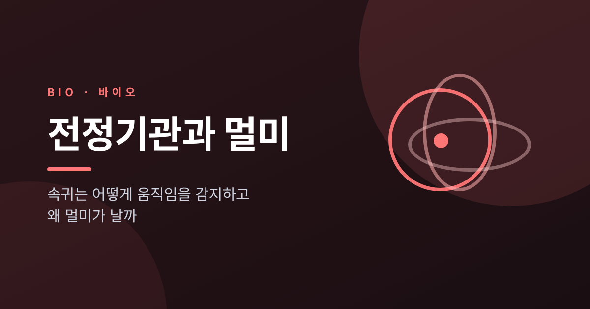
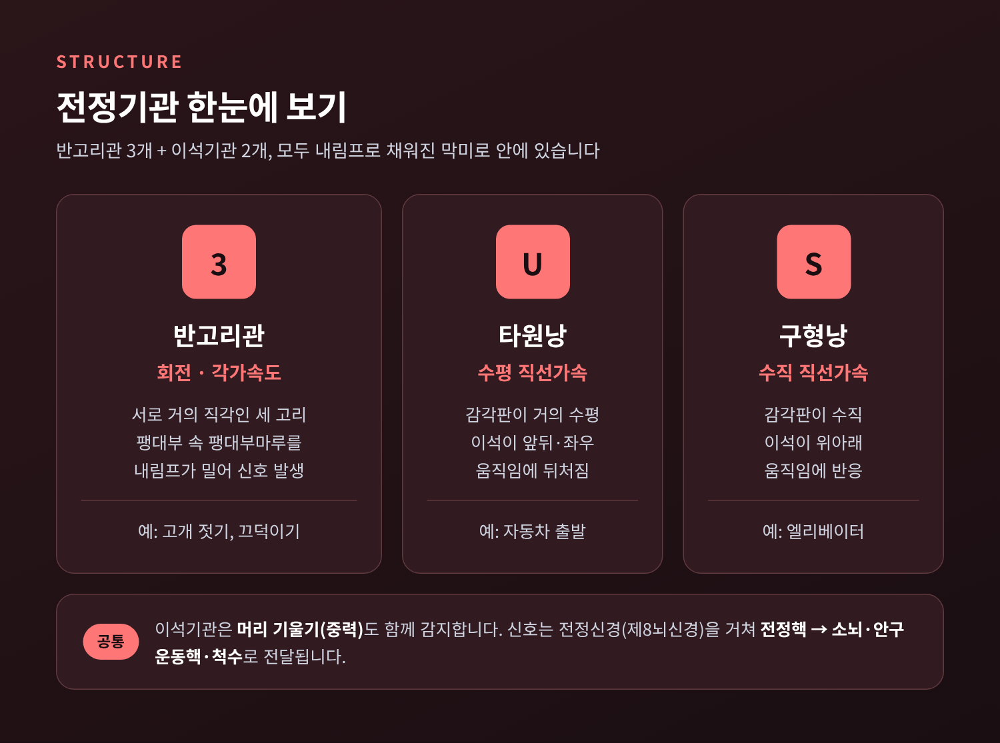
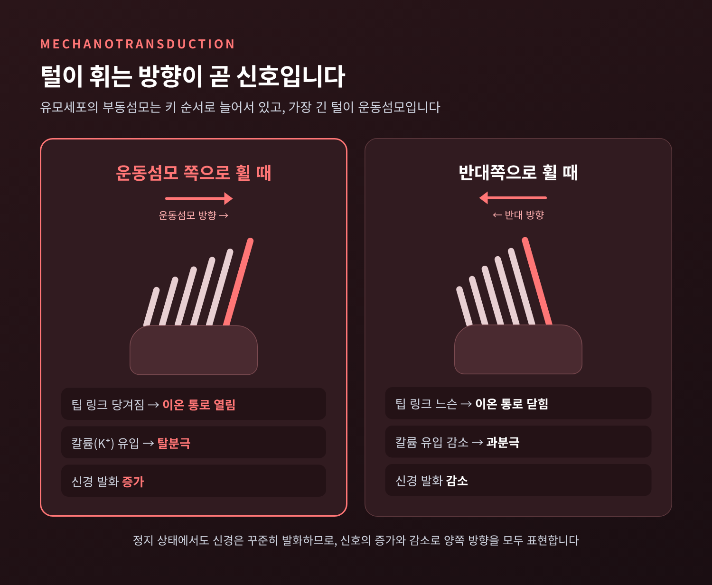
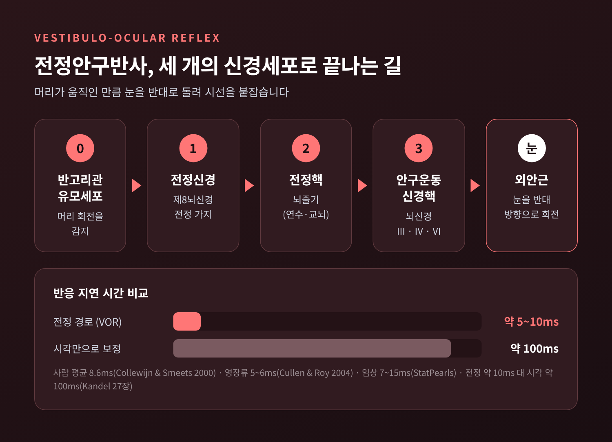
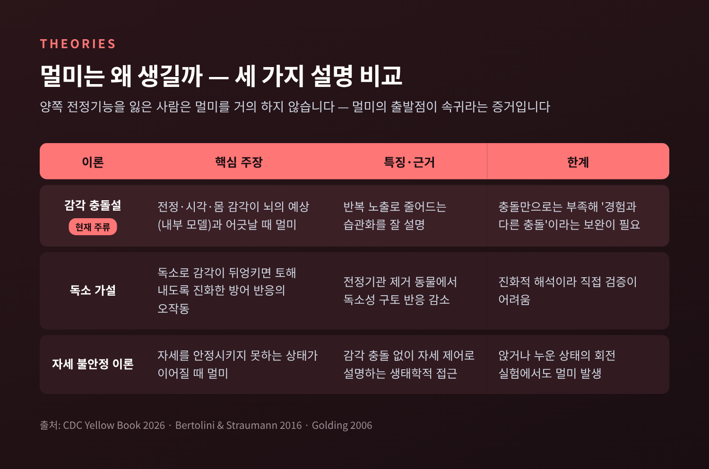
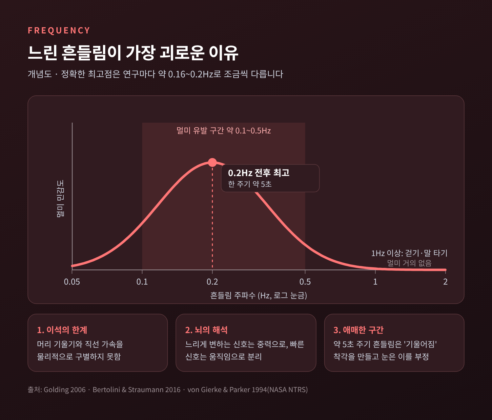

전정기관과 멀미 — 속귀는 어떻게 움직임을 감지하고 왜 멀미가 날까

이번 글에서는 속귀 깊숙이 자리한 전정기관과, 그 기관이 일으키는 멀미를 정리해 보겠습니다.
요점부터 말씀드리면 이렇습니다.
- 전정기관은 회전을 재는 반고리관 3개와, 기울기·직선가속을 재는 이석기관 2개로 이루어져 있습니다.
- 멀미는 고장이 아니라, 정상적인 감각 기관이 보내는 신호가 눈·몸의 신호나 뇌의 예상과 어긋날 때 생기는 반응으로 설명됩니다.
- 특히 한 번 흔들리는 데 5초쯤 걸리는 느린 흔들림(0.2Hz 전후)에 사람은 가장 취약합니다.
■ 귀 안의 작은 관성 센서, 전정기관
귀는 듣는 기관이면서 균형을 잡는 기관이기도 합니다.
달팽이관 바로 옆에 전정 미로가 있고, 이곳에 반고리관 3개와 이석기관 2개(타원낭·구형낭)가 들어 있습니다.
이 막으로 된 관과 주머니는 내림프라는 액체로 채워져 있습니다.
내림프는 칼륨이 많고, 바깥을 감싼 외림프는 나트륨이 많습니다.
이 이온 차이가 뒤에서 설명할 감각세포의 전기 신호를 만드는 바탕이 됩니다.
감각세포가 보낸 신호는 제8뇌신경의 전정 가지를 타고 뇌줄기의 전정핵 네 곳으로 갑니다.
여기서 소뇌, 눈을 움직이는 신경핵, 척수, 시상으로 퍼져 나갑니다.
머리가 움직이는 순간, 눈과 목과 팔다리가 함께 자세를 고쳐 잡는 이유입니다.

■ 반고리관 — 회전을 재는 세 개의 고리
반고리관 세 개는 서로 거의 직각으로 놓여 있습니다.
덕분에 고개를 끄덕이든, 젓든, 갸웃하든 어느 방향의 회전도 놓치지 않습니다.
각 관의 끝은 불룩하게 부풀어 있는데, 이를 팽대부라고 부릅니다.
팽대부 안에는 감각세포가 모인 팽대부릉이 솟아 있고, 감각세포의 털은 젤리 같은 막인 팽대부마루(쿠풀라)에 박혀 있습니다.
원리는 의외로 단순합니다.
머리가 돌기 시작하면 관은 함께 돌지만, 안의 내림프는 관성 때문에 제자리에 머물려 합니다.
그 결과 액체가 머리 회전과 반대 방향으로 팽대부마루를 밀고, 털이 휘면서 신호가 생깁니다.
커피잔을 갑자기 돌려도 커피는 한동안 그 자리에 있는 것과 같은 이치입니다.
제자리에서 여러 바퀴 돌다 멈췄을 때 세상이 계속 도는 느낌도 여기서 나옵니다.
몸은 멈췄지만 내림프가 잠깐 더 흘러, 뇌는 아직 돌고 있다고 받아들입니다.
좌우 귀의 반고리관은 같은 평면끼리 짝을 이룹니다.
한쪽이 흥분하면 짝이 된 반대쪽은 억제되는 ‘밀고 당기기’ 구조입니다.
게다가 반고리관 신경은 가만히 있을 때도 초당 100회 가까이 신호를 내보냅니다.
그래서 신호가 늘면 한쪽 방향, 줄면 반대 방향으로 읽을 수 있습니다.
참고로 사람 반고리관의 고리 반지름은 3.2mm, 관 자체의 반지름은 0.16mm 정도로 보고됩니다.
밀리미터 단위의 가느다란 관이 몸의 회전을 재고 있는 셈입니다.
■ 이석기관 — 중력과 직선 가속을 느끼는 돌
회전이 아닌 움직임은 이석기관이 맡습니다.
타원낭은 감각판이 거의 수평이라 자동차가 앞으로 나가는 것 같은 수평 이동에, 구형낭은 감각판이 수직이라 엘리베이터 같은 상하 이동에 더 잘 반응합니다.
비결은 감각세포 위에 얹힌 작은 돌, 이석입니다.
이석은 탄산칼슘 결정으로, 밀도가 약 2.7g/cm³입니다.
주변 내림프(약 1.0g/cm³)보다 세 배 가까이 무겁습니다.
그래서 고개를 숙이면 중력이 이석을 끌어당기고, 차가 출발하면 이석막이 한 박자 늦게 따라오며 털을 휘게 합니다.
다만 이 방식에는 근본적인 한계가 있습니다.
이석은 ’머리가 기울어진 것’과 ’몸이 앞으로 가속되는 것’을 물리적으로 구별하지 못합니다.
두 경우 모두 이석에는 똑같이 비스듬한 힘이 걸리기 때문입니다.
교과서는 이를 아인슈타인의 1908년 등가성 논의로 설명합니다.
뇌는 이 모호함을 신호의 빠르기로 풀어냅니다. 천천히 변하는 성분은 중력, 빠르게 변하는 성분은 움직임으로 나누어 해석하는 것입니다.
이 해석 방식이 뒤에서 멀미의 열쇠가 됩니다.
이석기관의 감각판 가운데에는 줄무늬(스트리올라)라는 띠가 지나갑니다.
이 선을 경계로 감각세포의 방향이 뒤집혀 있어, 한 기관 안에 여러 방향을 선호하는 세포가 함께 있습니다.
어느 쪽으로 기울어도 반응하는 세포가 반드시 있도록 짜인 배치입니다.
■ 털 한 가닥의 방향이 신호가 되는 원리
전정기관의 모든 감각세포는 유모세포입니다.
세포 꼭대기에 부동섬모라 불리는 털 약 100가닥이 키 순서대로 줄지어 있고, 가장 긴 한 가닥이 운동섬모입니다.
털 끝끼리는 팁 링크라는 가는 연결선으로 이어져 있습니다.
털 다발이 운동섬모 쪽으로 휘면 팁 링크가 당겨지며 이온 통로가 열립니다.
칼륨이 들어오고 세포는 탈분극되어 신경 신호가 늘어납니다.
반대로 운동섬모 반대쪽으로 휘면 통로가 닫히고 세포는 과분극되어 신호가 줄어듭니다.
민감도는 놀라운 수준입니다.
수 나노미터의 액체 움직임으로 생기는 1도도 안 되는 기울어짐에 반응한다는 보고가 있습니다.

■ 전정안구반사 — 눈으로 쫓는 것보다 열 배 빠른 보정
걸으면서 휴대폰을 들고 찍은 영상은 심하게 흔들립니다.
그런데 걸으면서 보는 세상은 흔들리지 않습니다.
머리가 움직이는 만큼 눈이 정확히 반대로 돌아 시선을 붙잡아 두기 때문입니다.
이것이 전정안구반사(VOR)입니다.
경로는 단 세 개의 신경세포로 이뤄집니다.
전정신경 → 전정핵 → 눈 근육을 움직이는 신경핵, 이렇게 세 단계만 거치면 외안근이 움직입니다.
그래서 빠릅니다.
사람을 대상으로 한 측정에서 머리가 돈 뒤 눈이 따라 움직이기까지 평균 8.6ms가 걸렸습니다.
영장류 연구에서는 5~6ms, 임상 자료에서는 7~15ms로 소개됩니다.
교과서는 전정 경로가 약 10ms인 반면 시각만으로 보정하면 약 100ms가 걸린다고 비교합니다.
측정 조건에 따라 숫자는 조금씩 다르지만, 눈으로 보고 따라잡는 것보다 열 배쯤 빠르다는 점은 일치합니다.
물론 완벽하지는 않습니다.
아주 짧지만 지연이 있는 만큼, 시선 안정이 100% 이루어지지는 않는다는 것이 연구의 결론입니다.

■ 멀미는 왜 생길까 — 세 가지 설명
멀미는 자동차와 배는 물론 비행기, 놀이기구, VR, 시뮬레이터, 우주에서도 생깁니다.
대개 단계적으로 옵니다.
배 속이 신경 쓰이고, 몸이 더워지고, 하품과 땀이 나다가 어지럼과 구역, 구토로 이어집니다.
흥미로운 사실이 하나 있습니다.
양쪽 전정기능을 완전히 잃은 사람은 멀미를 거의 하지 않습니다.
멀미의 출발점이 속귀라는 가장 강력한 증거입니다.
그렇다면 정상적인 전정기관은 왜 우리를 괴롭힐까요. 대표적인 설명은 세 가지입니다.
첫째, 감각 충돌설입니다. 현재 가장 널리 받아들여지는 설명입니다.
뇌는 전정, 눈, 몸의 감각을 경험으로 쌓은 ’예상’과 끊임없이 비교합니다.
차 안에서 책을 보면 눈은 “가만히 있다”고, 속귀는 “흔들린다”고 보고합니다.
이 불일치가 예상과 어긋날 때 멀미가 시작된다는 것입니다.
충돌 자체보다 ’과거 경험과 다르다’는 점이 핵심이라는 보완도 있습니다.
같은 배를 여러 번 타면 멀미가 줄어드는 습관화도 이 설명과 잘 맞습니다.
둘째, 독소 가설입니다. 진화의 관점에서 보는 설명입니다.
상한 음식이나 독소를 먹으면 감각의 협응이 흐트러집니다.
그래서 감각이 뒤엉키면 일단 토해 내도록 진화했고, 낯선 움직임이 이 경보를 잘못 울린다는 해석입니다.
양쪽 전정기관을 제거한 동물에서 독소에 대한 구토 반응도 줄었다는 실험이 근거로 꼽힙니다.
다만 직접 검증하기 어려운 해석적 가설이라는 한계가 있습니다.
셋째, 자세 불안정 이론입니다.
감각 충돌이 아니라, 몸이 자세를 제대로 안정시키지 못하는 상태가 이어질 때 멀미가 난다는 주장입니다.
하지만 앉거나 누운 채 회전시키는 실험에서도 멀미가 생긴다는 점이 반론으로 제기됩니다.
예전엔 멀미를 ’의지가 약하거나 몸이 약한 탓’으로 여기기도 했습니다.
지금은 감각 정보를 통합하는 뇌의 정상적인 계산 과정이 낯선 환경에서 엇나간 결과로 이해합니다.

■ 0.2Hz, 느린 흔들림이 유독 괴로운 이유
멀미에는 ’잘 걸리는 박자’가 있습니다.
연구들은 0.1~0.5Hz 사이의 느린 흔들림이 멀미를 잘 일으키고, 그중 0.2Hz 전후에서 가장 심하다고 보고합니다.
0.2Hz는 한 번 오르내리는 데 약 5초가 걸리는 흔들림입니다.
반대로 1Hz를 넘는 빠른 흔들림, 예컨대 걷기나 말 타기는 멀미를 거의 일으키지 않습니다.
최고점을 0.2Hz로 보는 연구와 0.16Hz로 보는 연구가 있습니다.
국제 기준도 대략 0.1~0.3Hz를 주된 범위로 다루는 것으로 인용됩니다.
정확한 꼭짓점은 조금씩 다르지만, ’몇 초에 한 번’의 느린 출렁임이라는 점은 같습니다.
이유는 앞서 본 이석의 한계와 이어집니다.
뇌는 느리게 변하는 신호를 중력으로 해석합니다.
그런데 5초 주기의 흔들림은 ’움직임’이라기에는 느리고 ’중력’이라기에는 계속 변합니다.
뇌는 이 가속을 중력에 더해 버려, 중력 방향이 기울었다는 착각을 만듭니다.
그런데 눈과 몸은 그런 기울어짐을 확인해 주지 않습니다.
결국 해석이 가장 애매해지는 구간에서 충돌이 가장 커지는 것입니다.

■ 누가 더 멀미를 할까
멀미 민감도는 사람마다 크게 다릅니다.
- 나이: 2세 미만 아기는 대개 멀미를 하지 않습니다. 이후 민감도가 올라가 7~12세에 가장 높고, 어른이 되며 줄어듭니다. 최고점을 9~10세로 보는 연구도 있습니다.
- 성별: 여성이 더 민감한 편입니다. 배 위 설문에서는 구토 위험이 여성 대 남성 약 5대 3으로 나타났습니다. 다만 나이의 영향보다는 작습니다.
- 호르몬과 임신: 월경, 경구피임약, 임신 등 호르몬 요인이 민감도와 관련이 있습니다. 월경 주기에 따른 변화는 남녀 차이의 약 3분의 1 수준으로 보고됩니다.
- 편두통: 편두통, 어지럼증, 전정질환 병력이 있으면 멀미 위험이 높습니다. 둘 사이의 연관은 강하지만 정확한 기전은 아직 확정되지 않았습니다.
- 유전: 쌍둥이 연구에서는 개인차의 55~70%가 유전으로 설명된다고 봅니다.
의외의 결과도 있습니다.
유산소 체력이 좋은 사람이 오히려 더 민감하다는 조사가 있고, 성격 요인과는 뚜렷한 관련이 없었습니다.
■ 우주멀미 — 중력이 사라지면 생기는 혼란
중력이 거의 없는 우주에서는 이석이 늘 느끼던 ’아래’가 사라집니다.
우주비행사의 60~80%가 비행 초기 2~3일 동안 우주멀미를 겪는 것으로 알려져 있습니다.
증상은 보통 8~72시간, 평균 36시간 정도 이어진다는 보고가 있습니다.
지구로 돌아온 뒤 첫 며칠에도 비슷한 비율이 다시 증상을 겪는다고 합니다.
원인으로는 체액이 머리 쪽으로 몰리는 변화와, 이석의 기울기 신호가 사라지며 생기는 감각 충돌이 함께 거론됩니다.
연구자들은 우주멀미를 특별한 병이 아니라, 1G가 아닌 낯선 힘의 환경에서 생기는 멀미의 한 형태로 봅니다.
■ 이석증과는 어떻게 다를까
같은 전정기관이 원인이지만, 이석증은 결이 다릅니다.
멀미는 정상인 기관이 낯선 움직임에 반응하는 것이고, 이석증(양성 돌발성 체위성 현훈, BPPV)은 기관 안의 구조가 흐트러진 상태입니다.
이석기관에 있어야 할 이석이 떨어져 나와 반고리관으로 흘러 들어가면, 머리를 움직일 때마다 내림프를 엉뚱하게 흔듭니다.
그 결과 누울 때나 고개를 돌릴 때처럼 특정 자세에서 수 초에서 1분 이내의 회전성 어지럼이 반복됩니다.
가장 흔한 어지럼증 원인 중 하나로 꼽히며, 뒤쪽 반고리관에 생기는 경우가 가장 많습니다.
50세 이상, 여성에게 더 흔합니다.
이석을 제자리로 돌려보내는 이석정복술의 효과는 70~90%로 보고됩니다.
다만 어지럼은 원인이 다양하므로, 이런 증상이 반복되면 이비인후과나 신경과 진료로 정확한 원인을 확인하시길 권합니다.
■ 멀미를 덜 하기 위한 일반적인 방법
아래는 공신력 있는 기관들이 소개하는 일반적인 방법입니다.
- 시선 고정: 수평선이나 멀리 있는 고정된 물체를 바라봅니다. 이동 중 독서나 화면 보기는 피합니다. 눈과 속귀의 신호를 맞춰 주는 방법입니다.
- 머리 움직임 줄이기: 머리를 등받이에 기대 고정합니다. 커브에서는 움직임 방향에 맞춰 몸을 기울이는 편이 낫습니다.
- 자리 고르기: 차는 앞좌석, 비행기는 날개 근처, 기차는 앞쪽 정방향 창가, 배는 앞이나 가운데의 낮은 층이 덜 흔들립니다. 뒷좌석과 역방향 좌석은 피합니다.
- 환기와 호흡: 송풍구를 얼굴 쪽으로 돌리고 신선한 공기를 쐽니다. 평소 속도로 천천히 조절하며 숨 쉬는 방법은 실험에서 약 효과의 절반 정도를 보였고 부작용이 없었습니다.
- 컨디션: 수면 부족, 음주, 흡연, 과식과 기름진 음식을 피합니다.
- 반복 노출: 가장 효과적인 방법은 습관화입니다. 다만 시간이 걸리고 주기적으로 다시 노출되어야 유지됩니다.
생강이나 지압 밴드는 기관마다 평가가 엇갈립니다. 시도해 볼 만한 자가요법으로 소개하는 곳도 있지만, 근거가 약하거나 위약과 차이가 없다는 평가도 있습니다.
멀미약도 있습니다.
그러나 성분 계열에 따라 졸림, 입마름 같은 부작용이 있고, 녹내장이나 배뇨 장애가 있는 분, 어린이는 특히 주의가 필요합니다. 임신 중이거나 다른 약을 드시는 분도 마찬가지입니다.
증상이 시작되기 전에 먹어야 효과가 좋다는 점도 있어, 복용 여부와 시점은 반드시 의사나 약사와 상담하시길 권합니다.
정리하면 이렇습니다.
전정기관은 몇 밀리미터 크기의 관과 작은 돌로 회전과 중력을 재고, 10ms 안팎의 속도로 시선을 붙잡아 주는 정교한 센서입니다.
멀미는 그 센서가 고장 나서가 아니라, 너무 정직하게 일한 결과에 가깝습니다.
“멀미는 몸이 약해서가 아니라, 감각이 서로 다른 이야기를 할 때 뇌가 보내는 경고입니다.”
다음에 차 안에서 속이 울렁인다면, 창밖 먼 곳으로 시선을 옮겨 보시기 바랍니다. 눈과 귀가 같은 이야기를 하기 시작하면, 뇌도 조금은 안심할 것입니다.
#전정기관 #멀미 #반고리관 #이석기관 #전정안구반사 #감각충돌 #우주멀미 #이석증 #속귀
출처
- Kandel ER 외, Principles of Neural Science 6판, 27장 The Vestibular System (McGraw Hill, 2022) — PDF
- Michigan State University Open Books, Introduction to Neuroscience — Vestibular System
- University of Minnesota, Vestibular System 강의자료 — PDF
- StatPearls, Oculovestibular Reflex — 링크
- Collewijn H, Smeets JBJ. J Neurophysiol 2000;84:376–389 — PDF
- Cullen KE, Roy JE. J Neurophysiol 2004;91:1919–1933 — PDF
- Curthoys IS 외. Sustained and transient vestibular systems. Front Neurol 2017;8:117 — 링크
- CDC Yellow Book 2026, Motion Sickness — 링크
- Bertolini G, Straumann D. Moving in a moving world. Front Neurol 2016;7:14 — PDF
- Golding JF. Motion sickness susceptibility. Auton Neurosci 2006;129:67–76 — PDF
- von Gierke HE, Parker DE. Aviat Space Environ Med 1994 (NASA NTRS) — PDF
- NASA Human Research Roadmap, Space Motion Sickness (보관본) — PDF
- Awasthi SK, Rajguru R. Space Motion Sickness – An Overview. Indian J Aerosp Med 2012 — 링크
- Lackner JR, DiZio P. Space motion sickness. Exp Brain Res 2006 — 링크
- Squires TM 외. Sedimenting otoconia in BPPV. J Biomech 2004 — arXiv
- Medscape(eMedicine), Benign Paroxysmal Positional Vertigo — 링크
- Bhattacharyya N 외. Clinical Practice Guideline: BPPV (Update), 2017 — ASHA 요약
- 서울대학교병원 의학정보, 양성 자세 현훈 — 링크
- Mayo Clinic, Motion sickness: First aid — 링크
- cochlea.eu, Hair cells: overview — 링크
이 글은 일반적인 정보 제공을 위한 것이며, 의학적 진단이나 처방을 대신하지 않습니다.